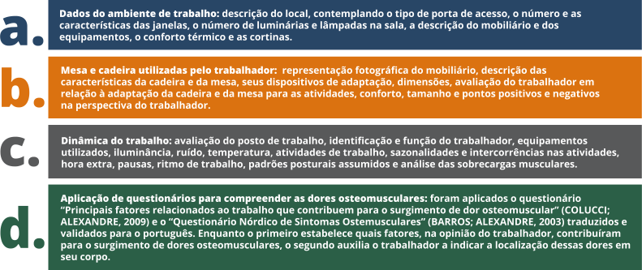

TÓPICO 3
O PAPEL DO GESTOR DA APS PARA APLICAÇÃO DE ESTRATÉGIAS DE PREVENÇÃO E PROMOÇÃO DA SAÚDE DE SEU TRABALHADOR
TÓPICO 3
O PAPEL DO GESTOR DA APS PARA APLICAÇÃO DE ESTRATÉGIAS DE PREVENÇÃO E PROMOÇÃO DA SAÚDE DE SEU TRABALHADOR
Acompanhe o desenvolvimento de um roteiro de análise realizado em órgão público:
